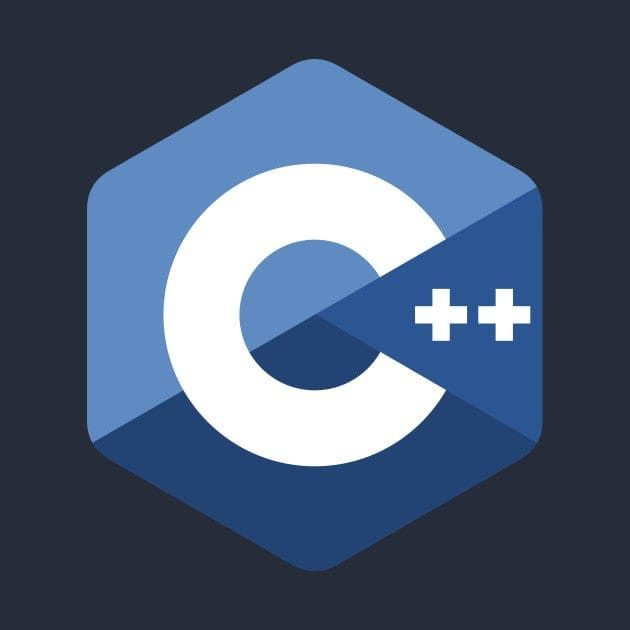

Руководство по языку
программирования C++
Язык программирования С++ представляет высокоуровневый
компилируемый язык программирования общего назначения
со статической типизацией, который подходит для создания
самых различных приложений. На сегодняшний день С++
является одним из самых популярных и распространенных
языков.

С++ является мощным языком, унаследовав от Си богатые возможности по работе с памятью. Поэтому нередко С++ находит свое применение в системном программировании, в частности, при создании операционных систем, драйверов, различных утилит, антивирусов и т.д. К слову сказать, ОС Windows большей частью написана на С++. Но только системным программированием применение данного языка не ограничивается. С++ можно использовать в программах любого уровня, где важны скорость работы и производительность. Нередко он применяется для создания графических приложений, различных прикладных программ. Также особенно часто его используют для создания игр с богатой насыщенной визуализацией. Кроме того, в последнее время набирает ход мобильное направление, где С++ тоже нашел свое применение. И даже в веб-разработке также можно использовать С++ для создания веб-приложений или каких-то вспомогательных сервисов, которые обслуживают веб-приложения. В общем С++ - язык широкого пользования, на котором можно создавать практически любые виды программ.
Своими корнями он уходит в язык Си, который был разработан в 1969—1973 годах в компании Bell Labs программистом Деннисом Ритчи (Dennis Ritchie). В начале 1980-х годов датский программист Бьерн Страуструп (Bjarne Stroustrup), который в то время работал в компании Bell Labs, разработал С++ как расширение к языку Си. Фактически вначале C++ просто дополнял язык Си некоторыми возможностями объектно-ориентированного программирования. И поэтому сам Страуструп вначале называл его как "C with classes" ("Си с классами").
В C ++ токены могут быть определены как наименьший строительный блок программ на C ++, понятный компилятору. Каждое слово в исходном коде C ++ может рассматриваться как токен.
Типы токенов в C ++
У нас есть несколько типов токенов, каждый из которых служит определенной цели в синтаксисе и семантике C ++. Ниже приведены основные типы токенов в C ++:
Идентификаторы
Ключевые слова
Константы
Строки
Специальные символы
Операторы
В языке программирования C ++ идентификаторы это уникальные имена, присваиваемые переменным, функциям, классам, структурам или другим объектам в программе. Давайте рассмотрим пример:
Ключевые слова (также известные как зарезервированные слова) имеют особое значение для Компилятора C ++ и всегда пишутся или печатаются в сокращенном (нижнем) регистре. Ключевые слова - это слова, которые язык использует для специальных целей, такие как void, int, public и др. Его нельзя использовать для имени переменной, функции или любых других идентификаторов. Общее количество зарезервированных ключевых слов равно 95. Ниже приведена таблица некоторых часто используемых ключевых слов C ++.
Примеры:
asm: Объявлять, что блок кода должен быть передан ассемблеру.
auto: спецификатор класса хранилища, который используется для определения объектов в блоке.
break: завершает оператор switch или цикл.
catch: определяет действия, выполняемые при возникновении исключения.
char: фундаментальный тип данных, определяющий символьные объекты.
extern: Идентификатор, указанный как extern, имеет внешнюю привязку к блоку.
Как я могу выучить C ++ самостоятельно?
Изучение таких языков программирования, как C ++, - немного сложная задача, но ее легко освоить самостоятельно. Вам просто нужно регулярно практиковаться, решать сложные задачи с кодом и создавать проекты, чтобы развить свои логические способности.
Каковы основные требования для изучения C ++?
Что ж, чтобы выучить C ++, вы должны быть знакомы с любым языком программирования, и если вы хотите узнать подробные требования к изучению C ++, то ознакомьтесь со статьей выше.
Могу ли я легко выучить C ++, если я знаю C?
Да, если вы знаете концепции языка C, то изучение C ++ для вас станет намного проще.
Сколько времени занимает изучение C ++?
Освоение C ++ требует времени, и это также зависит от времени, которое вы уделяете изучению этого языка программирования.